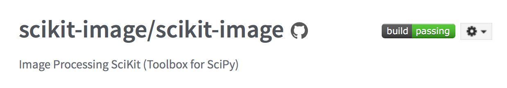
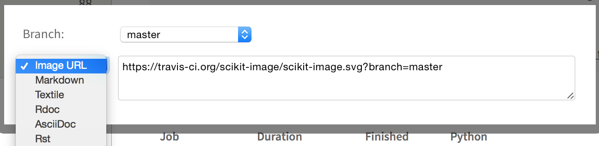
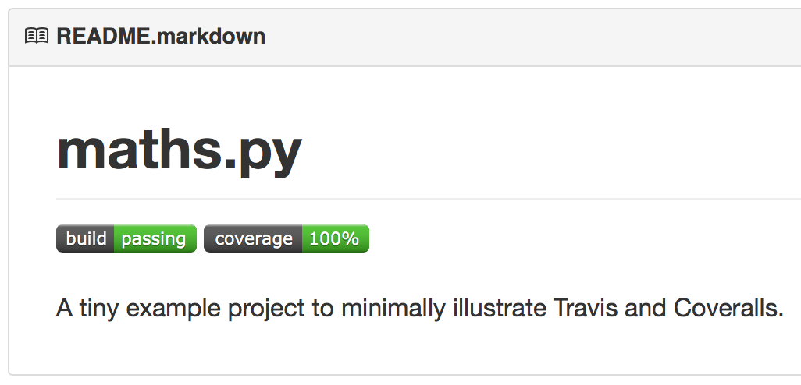

Continuous integration in Python, 6: Show off your work
We're finally ready to wrap up this topic. By now you can:
- Automatically test your code with pytest
- Measure your test coverage
- Configure your tests
- Use Travis-CI to run your tests automatically with each push
- Use Coveralls to measure your coverage with each push
But, much as exercise is wasted if your bathroom scale doesn't automatically tweet about it, all this effort is for naught if visitors to your GitHub page can't see it!
Most high-profile open-source projects these days advertise their CI efforts. Above, I cheekily called this showing off, but it's truly important: anyone who lands on your GitHub page is a potential user or contributor, and if they see evidence that your codebase is stable and well-tested, they are more likely to stick around.
Badging your README is easy. (You do have a README, don't you?) In Travis, go to your latest build. Near the top right, click on the "build passing" badge:

You'll get an overlay, with a pull-down menu for all the different options for getting the badge. You can grab the image URL, or you can directly grab the Markdown to put into your markdown-formatted README, or a bunch of other options, including RST:

Just copy and paste the appropriate code and add it to your README file wherever you please.
Meanwhile, on your repository's Coveralls page, on the right-hand side, you will find another pull-down menu with the appropriate URLs:
Again, just grab whichever URL is appropriate for your needs (I prefer Markdown-formatted READMEs), and add it to your README, usually next to the Travis badge.
And you're done! You've got automated tests, tons of test coverage, you're running everything correctly thanks to configuration files, and all this is getting run on demand thanks to Travis and Coveralls. And thanks to badging, the whole world knows about it:

Comments
Comments powered by Disqus